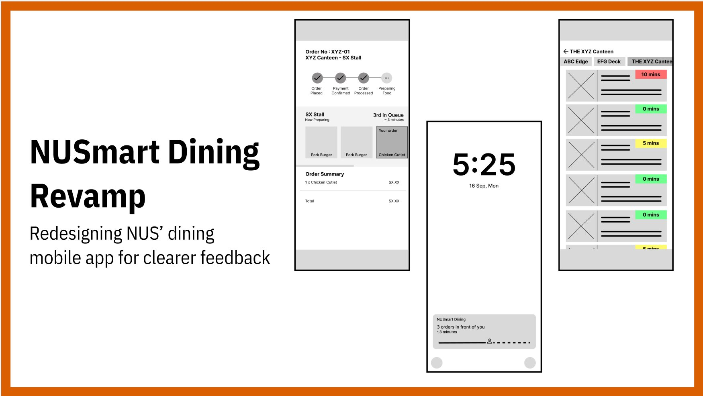
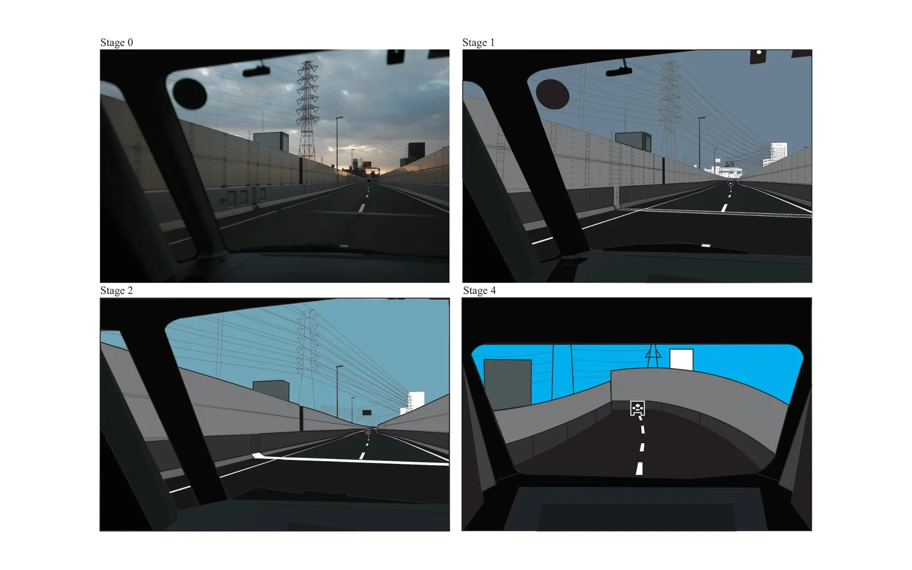

Hardware · Personal
Hardware · Personal
Pi Boy
A schedule on an e-ink display for my boyfriend and I to stay updated on each other's lives, named after the Raspberry Pi computer it runs on.
Read the build log
1 project
Hardware · Personal
A schedule on an e-ink display for my boyfriend and I to stay updated on each other's lives, named after the Raspberry Pi computer it runs on.
Internships and applied work — supply chain, public sector, and the non-profit systems in between.
1 project
Replaced error-prone spreadsheets at Caregiving Welfare Association with admin portals and dashboards for volunteer tracking, donation reporting, and automated receipts — plus a design system to hold it together.
1 project
 Software · NUS Fintech × HeyMax
Software · NUS Fintech × HeyMax
A collaboration between NUS Fintech Society and HeyMax to reduce planning chaos in Telegram group chats by turning scattered travel links into a structured, AI-assisted trip summary and interactive map.
End-to-end design projects, most taken from user research through to a tested prototype.
5 projects
 UI/UX · NUS
UI/UX · NUS
A mobile app that tackles food waste by simplifying pantry management and meal planning — designed for 18–24 year olds, and aimed at the point of purchase rather than the point of disposal.

UI/UX · NUSA redesign of NUS's canteen pre-ordering app, focused on the one pain point that made students stop trusting it: nobody could tell how long they'd actually be waiting.
 UI/UX · NUS
UI/UX · NUS
A desktop video-conferencing platform built specifically for fitness — so friends at different fitness levels can take the same class together, each doing a version of the exercise that suits them.
 UI/UX · NUS
UI/UX · NUS
A browser extension that makes dense text readable for people it currently shuts out — multilingual readers, and anyone whose attention the modern web has fragmented.
An advocacy toolkit for Kita, a Singaporean youth non-profit: a blind box that unfolds into a brochure, packaged with character keychains — built to turn passive sympathisers into active ambassadors.
2 projects
 Graphic Design · NUS
Graphic Design · NUS
A personal brand system built as a magazine — logo, palette, typography, and a name card reimagined as a wearable lanyard.

Graphic Design · NUS1 project
 Videography · NUS
Videography · NUS
A non-fiction short documentary on Meta Illusions, a local magic business.